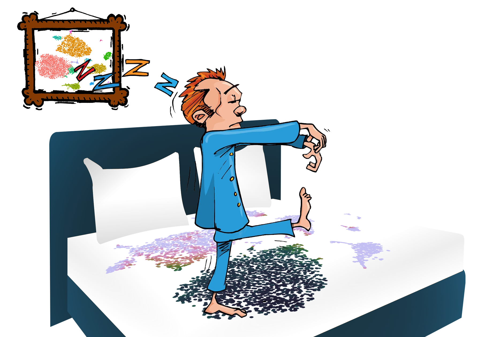

Sleepwalk
Walk through your embedding
Svetlana Ovchinnikova
Simon Anders
Simon Anders

Useful links
This presentation
https://kloivenn.github.io/Ascona2019/
Sleepwalk web-page
Visualizing Your Data
Distortion Is Unavoidable

Explore The Embedding
sleepwalk(citeSeq$tsne, features)
Compare Several Embeddings
sleepwalk(list(citeSeq$tsne, citeSeq$umap), citeSeq$pca, titles = c("t-SNE", "UMAP"))
Compare Samples
sleepwalk(list(um13_A, um13_B, um14),
list(comFeatures13_A, comFeatures13_B, comFeatures14), same = "features",
titles = c("e13.5_A", "e13.5_B", "e14.5"), nrow = 1)
Compare Distances
sleepwalk(list(citeSeq$tsne, citeSeq$tsne), list(citeSeq$adt, citeSeq$pca),
compare = "distances")
Additional Features
Lasso Selection
getHighGenes <- function(marked){
if( length(marked) == 0 ) return( "" )
df <- data.frame(
meanMarked = apply( data$expr[ marked, ], 2, mean ),
sdMarked = apply( data$expr[ marked, ], 2, sd ),
meanUnmarked = apply( data$expr[ -marked, ], 2, mean ),
sdUnmarked = apply( data$expr[ -marked, ], 2, sd )
)
df$sepScore <- ( df$meanMarked - df$meanUnmarked ) / pmax( df$sdMarked + df$sdUnmarked, 0.002 )
# round to two decimal places
df <- round(df * 100)/100
print(head( df[ order( df$sepScore, decreasing = TRUE ), ], 15 ))
topGene <- rownames(df)[which.max(df$sepScore)]
pl <- ggplot() + geom_point(aes(x = data$um[, 1], y = data$um[, 2],
colour = data$expr[, topGene])) +
labs(colour = topGene) + scale_color_gradient(low = "Yellow", high = "Red")
print(pl)
}
sleepwalk(data$umap, data$pca, pointSize = 2.5, on_selection = getHighGenes)
Load data from https://kloivenn.github.io/Ascona2019/data/e13_A.rds
Load script from https://kloivenn.github.io/Ascona2019/data/trySleepwalk.R
Additional Features
Snapshot
Double-click on a point to get its index |
Save to file
|
You can save a Sleepwalk app as a file |

|
And More
Linked Charts
more information at https://anders-biostat.github.io/linked-charts/
Thank you for your attention
This presentation
https://kloivenn.github.io/Ascona2019/
Sleepwalk web-page
https://anders-biostat.github.io/sleepwalk/